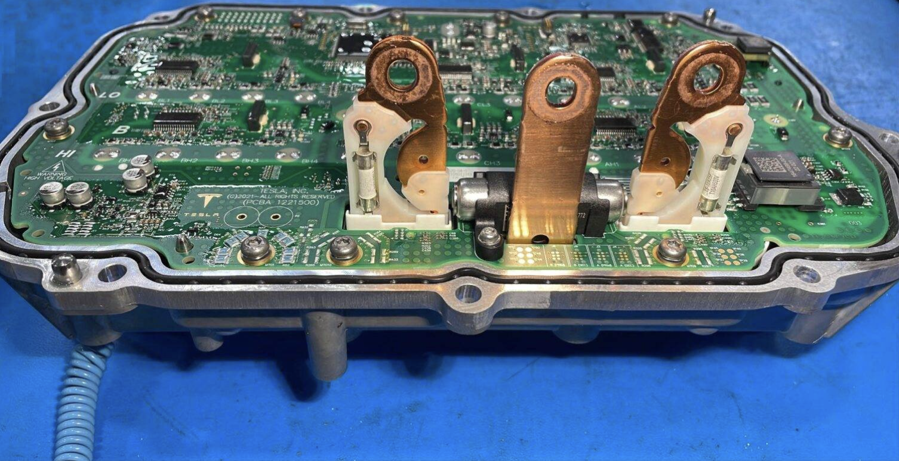

Contributed to Tesla’s drive inverter phase-out busbar and owned a fault-response hardware component. Progressed part design through DFMEA, material research, CAE simulations, manufacturing reviews, drawing and design packages, supplier coordination, and validation testing. Designed manufacturing and test fixtures and supported Hall sensor calibration, PCB mounting, laser welding, machining, and 3D printing.